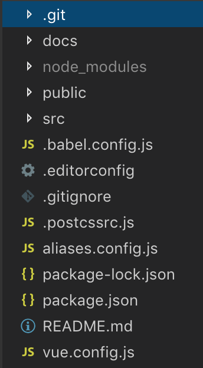

This FAQ answers the question "How to migrate Vue 2 code from Vue CLI 2 to Vue CLI 3?"
Vue.js has rearchitected the way that you build the Vue.js 2 code. It's important to discern the difference between the way that you code Vue.js and the way that you build Vue.js. Vue.js released an new version of the CLI (the command line interface for building Vue.js code in to Vanilla JavaScript and CSS) in 2017. The versioning moved from 2 to 3.
It is not necessary to upgrade the Vue.js 2 code, but if you want to continue to develop in Vue.js you should upgrade the CLI to version 3. There are a number of important architecture changes to the way that a project is configured and architected in CLI 3. It is not necessary to modify your code to make this move. The changes required involved moving new configuration files and changes to the file structure (where your code is stored).
This document outlines a process to migrate your code repo and add new config files so that it can take advantage of the CLI 3.
The first step should be to make sure you're using the latest version of node and npm. This can be done by executing the global install command. This command will update node and npm.
npm install -g node
If you're on a Mac, depending on how you installed node, you made need to use the sudo command for permission to do this upgrade.
sudo npm install -g node
Its always a good idea to check your upgrade by checking versions.
npm --version
node --version
To upgrade Vue CLI you can follow instructions on this page: https://cli.vuejs.org/guide/installation.html
If you have Vue 2 CLI installed you need to uninstall it.
npm uninstall vue-cli -g
The command to install CLI 3 is
npm install -g @vue/cli
Then verify the version
vue --version
As of this writing, the current version is 3.3.0, but there is a lot of development taking place with Vue.js and this may not be the version that you get. Your major version (the first number should at least be a 3).
CLI 3 provides a production and dev build just as CLI 2 did but the command to run the dev build and server has changed. To run the dev build use the following command:
npm run serve
To run the production build, which should create runnable html/css/js in the docs directory:
npm run build
Do the migrate on a branch and then when it's working properly, merge to the Master branch. For example (below), create a branch named cli3 and check it out to your local machine to work on.
git checkout -b cli3
The new file structure that CLI 3 is looking for is shown in the picture below. Your goal will be to migrate your file structure to this new structure. Notice that the config and build directories are gone. The node_modules is listed in .gitignore so it the name appears faded out in VS Code. There are some new .js files used for configuration.

The changes to look for in this picture are:
views directory - in CLI 3 the best practice is to put components referenced in the router into the views directory and use the components directory for non-view components.gitkeep file in the components directory and the views directory.babel.config.js, postcssrc.jsdocs directory that you'll add aliases.config.js and vue.config.jspackage.json library dependencies has changed significantly and you'll want to replace the entire content of package.json with code provided in this documentstatic folder has been renamed to public and the index.html has moved into the public folderNOTE: It's possible that the config code provided in this document may change. You can always generate the lates config code by running the new project create command to create a new project that will have all of the latest config code. The project create command will not create the vue.config.js or the aliases.config.js as those are user created and I created them to allow for the use of the @ symbol to specify src and to make the build create distributable files in the docs folder so that we can host on github.io.
To create a new project in Vue CLI 3 you can run the command below which will create a project called hello-world. Notice that the keyword has changed froom init to create. You should also pick the default babel/eslint.
vue create hello-world
See this page for instructions on creating a new project and note special instructions for Windows users that are using the git bash terminal: https://cli.vuejs.org/guide/creating-a-project.html#vue-create.
The purposed of these migration instructions is that you shouldn't have to create a new project - you should be able to migrate the code by just adding config files and modifying the file structure.
delete config and build directories
delete babel.rc
rename static to public
move index.html (and any other static contents) into public
create an aliases.config.js file and load it with the contents specified in this document
create an babel.config.js file and load it with the contents specified in this document
create an vue.config.js file and load it with the contents specified in this document
delete docs directory as it will be recreated when you run the build
delete package-lock.json file - this file will get automatically recreated when you run npm install
replace the contents of package.json with the code contents specified in this document
create a router.js file in the src of the project and move the contents of router/index.js into this file
create a views directory and move any files in the components directory that are reference in the router.js into the views directory
add an empty .gitkeep file to the views and components directory (this is to keep them around even if empty)
update links in router.js to point to files in the views directory
delete node_module and npm install to get new ones
test code build by running npm run serve
build production code into docs by running npm run build
push branch to github git push -set -upstream origin <branch name>
you should see your branch and master when you run git branch
merge to master by checking out master locally and running merge
git checkout master
git merge <branch name>
add/commit/push migrated code to github and test on github.io
Once you're done merging you can delete the branch. It's good practice for cleanup. You'll delete it locally and remotely.
Local: git branch -d <branch name>
Remote: git push origin --delete <branch-name>
module.exports = {
presets: [
'@vue/app'
]
}
module.exports = {
"plugins": {
"postcss-import": {},
"postcss-url": {},
// to edit target browsers: use "browserslist" field in package.json
"autoprefixer": {}
}
}
const path = require('path')
function resolveSrc(_path) {
return path.join(__dirname, _path)
}
const aliases = {
'@': 'src',
'@src': 'src'
}
module.exports = {
webpack: {},
jest: {}
}
for (const alias in aliases) {
module.exports.webpack[alias] = resolveSrc(aliases[alias])
module.exports.jest['^' + alias + '/(.*)$'] =
'<rootDir>/' + aliases[alias] + '/$1'
}
const path = require('path');
module.exports = {
configureWebpack: {
resolve: {
//allow for @ or @src alias for src
alias: require('./aliases.config').webpack
}
},
chainWebpack: config => {
//turn off elint for webpack transpile
config.module.rules.delete('eslint');
},
runtimeCompiler: true,
css: {
sourceMap: true
},
publicPath: '',
//build for docs folder to enable gh-pages hosting
outputDir: './docs/',
assetsDir: 'assets'
}
{
"name": "hello-world",
"version": "0.1.0",
"private": true,
"scripts": {
"serve": "vue-cli-service serve",
"build": "vue-cli-service build",
"lint": "vue-cli-service lint"
},
"dependencies": {
"axios": "^0.18.0",
"vue": "^2.5.21",
"vue-router": "^3.0.2",
"vue2-animate": "^2.1.0"
},
"devDependencies": {
"@vue/cli-plugin-babel": "^3.3.0",
"@vue/cli-plugin-eslint": "^3.3.0",
"@vue/cli-service": "^3.3.0",
"babel-eslint": "^10.0.1",
"eslint": "^5.8.0",
"eslint-plugin-vue": "^5.0.0",
"vue-template-compiler": "^2.5.21"
},
"eslintConfig": {
"root": true,
"env": {
"node": true
},
"extends": [
"plugin:vue/essential",
"eslint:recommended"
],
"rules": {},
"parserOptions": {
"parser": "babel-eslint"
}
},
"postcss": {
"plugins": {
"autoprefixer": {}
}
},
"browserslist": [
"> 1%",
"last 2 versions",
"not ie <= 8"
]
}